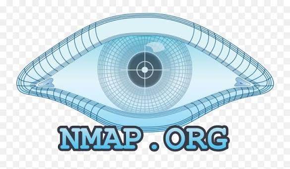
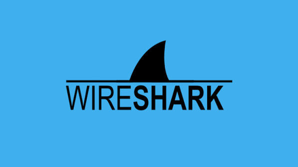
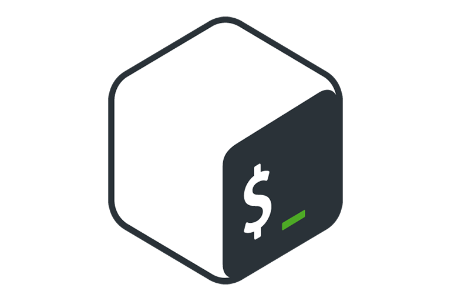
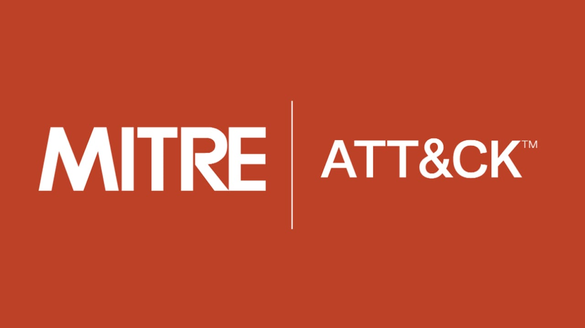

SOC & Blue Team
IntermediateAlert triage, log review, IOC validation, MITRE mapping.
Wazuh labs
Detection notes
Incident reports
No system is unbreakable — only unexplored.
Hi, this is
I am a cybersecurity learner focusing on SOC analysis, log investigation, threat detection, and hands-on security labs.
I like to document what I learn along the way: small experiments, CTF write-ups, and the occasional late-night debugging session.
About
I am a network security student currently training to become a SOC Analyst. My learning path focuses on analyzing security events, investigating logs, understanding attacker techniques, and building practical detection skills through labs, CTFs, and real-world security scenarios.
I enjoy learning by doing: building labs, solving CTF challenges, writing reports, documenting findings, and improving my ability to investigate security incidents.
Skills
Organized around SOC work, operating system fundamentals, security practice, and tools.
Compact overview of core security skills, evidence, and related technologies.
Alert triage, log review, IOC validation, MITRE mapping.
Windows/Linux log reading, shell workflow, service inspection.
OSINT, web testing, malware behavior notes, CTF methodology.
Discovery, packet review, SIEM context, practical reporting.
Tools arranged by investigation workflow instead of text-heavy lists.




Projects
Practical labs and documentation focused on investigation, detection, and evidence-based analysis.
Designed and implemented a high availability solution for Windows Server 2019 network services, focusing on redundancy, continuity, and resilient service deployment.
02/2026 - 05/2026
Deployed a Linux environment and used Lynis to audit, assess, and improve system security through hardening and configuration review.
01/2026 - 05/2026
Built a network monitoring system using LibreNMS to observe device health, network availability, and operational status in a centralized dashboard.
01/2026 - 05/2026
Designed an intrusion detection workflow combining pfSense and the ELK Stack to collect, analyze, and visualize network security events for anomaly detection.
10/2025 - 01/2026
CTF Write-ups
Blog-style cards for documenting the problem, evidence, exploitation path, and lessons learned.
Type: Web Exploitation
Analyzing weak upload validation, identifying execution paths, and documenting controlled exploitation steps.
Type: Digital Forensics
Reviewing registry artifacts, deleted traces, persistence indicators, and evidence extraction workflow.
Type: OSINT
Using public metadata, visible clues, and structured search methods without crossing privacy boundaries.
Type: Reverse Engineering
Reading program behavior, identifying strings, checking file formats, and building a repeatable analysis process.
GHI CHÚ BẢO MẬT
Mỗi điểm đỏ đại diện cho một bài viết, lỗ hổng bảo mật hoặc sự kiện tấn công đáng chú ý. Nhấp vào cảnh báo để xem chi tiết phân tích.
Large-scale exploitation of a file transfer platform vulnerability led to widespread incident response.
Learning Roadmap
A practical path toward SOC analysis, detection engineering fundamentals, and stronger portfolio documentation.
TCP/IP, routing, switching, DNS, HTTP, ports and basic network troubleshooting.
Operating system basics, users, services, permissions, logs and command-line workflow.
Collecting, reading and correlating security logs through SIEM investigation workflows.
Classifying alerts, reviewing context, reducing false positives and escalating real incidents.
Mapping behavior to tactics and techniques, then improving detection coverage.
Reviewing artifacts, persistence traces, file behavior, suspicious commands and IOCs.
Solving challenges, writing reports, documenting evidence and building repeatable notes.
Publishing labs, write-ups, detection notes and practical investigation projects.
Contact
For projects, write-ups, labs, and cybersecurity learning documentation.
Always learning. Always investigating. Always improving.